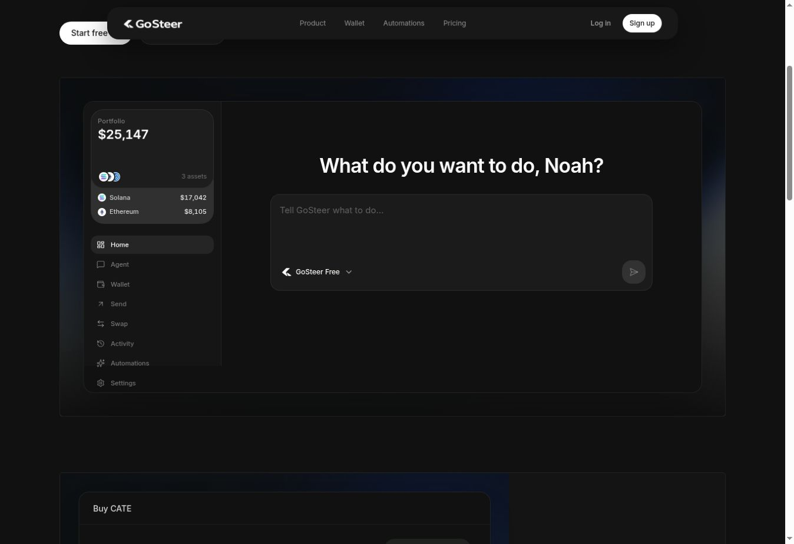

See what you hold.
Explore your portfolio through the conversation instead of starting with a set of separate wallet screens.
GoSteer is a crypto wallet for Solana and Ethereum with a chat interface. You can check your holdings, prepare a transaction, and review the proposal before sending it. The conversation gives you a way to work through the action step by step.
Visit GoSteer
Explore your portfolio through the conversation instead of starting with a set of separate wallet screens.
Use chat to work through a proposed transaction. The interface brings the details together for review.
Preparing a proposal and sending it are separate steps. You can look over the transaction before proceeding.
The chat helps prepare the action. The review is still yours.